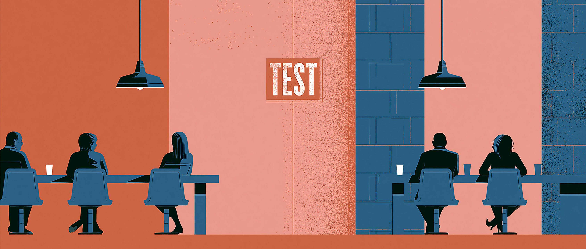

Forbes English
Grammar · Full Test
0 / 45
0 / 45
ENGLISH

Cheat Sheet Test · Alle Themen
🇬🇧
English
🇩🇪
Deutsch
🇮🇹
Italiano
🇪🇸
Español
🇫🇷
Français
🇯🇵
日本語
🇨🇳
中文
🇸🇦
العربية
🇷🇺
Русский
🇵🇹
Português
Cheat Sheet Test · Alle Themen
45 Fragen
15 Grammatikthemen · 3 Fragen pro Thema · Deutsch dabei
might
must / mustn't
have to / don't have to
like + -ing
be going to
will / won't
Past Simple
Present Perfect
already / yet / just
ever / never
some / any
one / ones
whose / possessive 's
Adverbs of manner
So / Neither
MCQ — Multiple Choice
GAP — Lückentext
ERR — Fehler finden
Test starten →
Dein Ergebnis
—
Nochmal versuchen